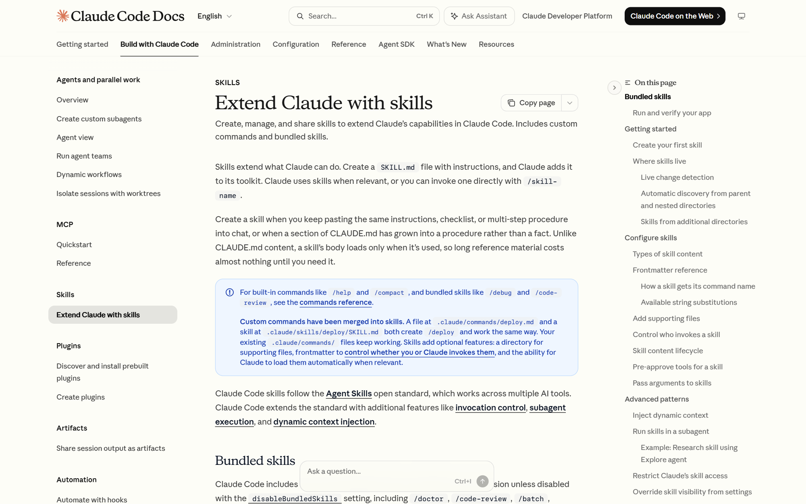
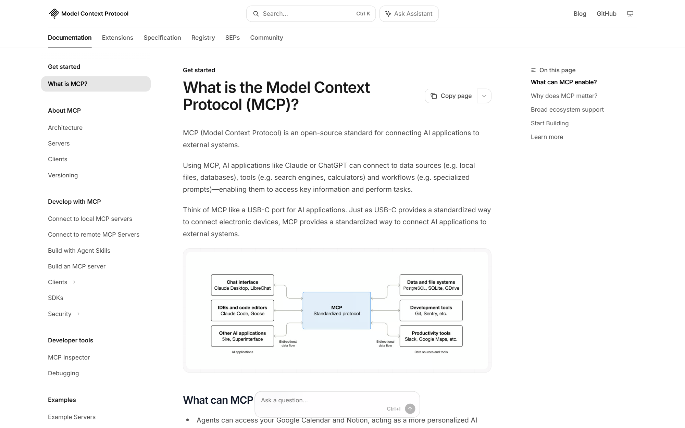
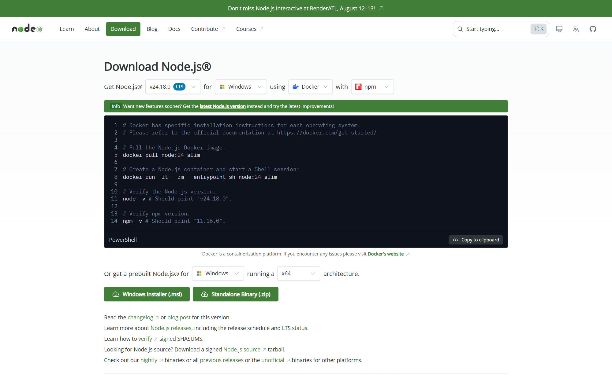

실습반 · 1반 (월·수)
3주 · 총 6회
첫 강의 2026-07-27
삼삼엠투 AI 교육 · 실습반 1강
작업환경 구축
터미널 · Claude Code · OMC · 스킬 · MCP —
오늘, 각자 노트북에 AI 에이전트 실습 환경을 처음부터 끝까지 세팅합니다.
⌨️
터미널
명령을 주고받는 창
→
🤖
Claude Code
터미널 속 AI
→
🚀
OMC
에이전트 오케스트레이션
→
🧩
스킬 · MCP
도구와 외부 연결
DATE 2026-07-27 (월)강사 박현웅반 실습 1반 · 월·수ORG 삼삼엠투
● 실습 1강 — 작업환경 구축02 / 30
Course Map
3주 · 6회 실습 과정 — 오늘은 그 출발점(1강)
🗺️ 실습반 커리큘럼
| 1강 (오늘) | 작업환경 구축 — Claude Code·OMC·스킬·MCP·Orca |
| 2강 | 커스텀 스킬 도구 생성 — 데이터 수집·분석, 인사이트 추출 |
| 3강 | 하네스 엔지니어링 — 하지 말아야 할 것 |
| 4강 | 실습 과제 선정 — 개인/파트 단위 과제 |
| 5강 | 과제 진행사항 + 강사 피드백 |
| 6강 | 과제 진행사항 + 강사 피드백 |
| 합동 | 실습 1·2반 합동 공유회 — 최우수 1명 수상 |
🎯 1강의 역할
- 2강부터는 도구를 '만들고' 실무 과제를 진행합니다.
- 그 모든 실습이 돌아갈 기반 환경을 오늘 완성합니다.
- 강사 1명 · 수강생 최대 4명 — 각자 노트북으로 직접 따라 세팅.
오늘의 성공 = 각자 노트북에서 Claude Code + OMC가 실행되고, 스킬·MCP가 붙어 첫 작업이 도는 것
● 실습 1강 — 오늘의 목표03 / 30
Goal
오늘 끝나면 — 빈 터미널이 'AI 에이전트 작업실'이 됩니다
🕳️ Before — 지금
- 터미널을 열어본 적이 거의 없음
- AI는 웹 채팅(브라우저)으로만 사용
- 내 파일·데이터·도구와 연결 안 됨
- 반복 업무를 매번 손으로
✅ After — 오늘 완료 기준
- Claude Code 설치 · 로그인 완료
- Claude Code + OMC 설치·실행 성공
- 스킬 1개를 실제로 사용
- MCP 1개 연결 확인 (✔ Connected)
- 첫 작업(미니 실습) 성공
● 실습 1강 — 오늘의 단어04 / 30
Keywords
오늘의 다섯 단어 — 이것만 잡으면 됩니다
⌨️
터미널Terminal
컴퓨터에 '글로 명령'하는 검은 창
🤖
클로드Claude
명령을 이해하는 AI(두뇌)
🚀
OMCoh-my-claudecode
Claude Code를 '팀'으로 지휘하는 오케스트레이션
🧩
스킬Skill
AI에게 주는 '업무 매뉴얼'
🔌
MCPModel Context Protocol
외부 도구·데이터 연결 규격
비개발자에게 낯선 단어지만 — 오늘은 '설치하고 한 번 써보는 것'까지가 목표입니다. 원리는 다음 강의에서 깊게.
● 왜 우리가 할 수 있나05 / 35
Why You Can Do This
코딩 실력이 아니라 — '내 일을 말로 설명하는 능력'
- 필요한 건 프로그래밍이 아니라 내 업무를 정확히 아는 것.
- AI에게 "이 일을 이렇게 해줘"라고 말(자연어)로 지시합니다.
- 번역·리서치·문서·데이터 정리… 여러 전문 에이전트로 팀을 꾸리는 셈.
할루시네이션·낮은 품질도 — 내 업무에 맞게 세팅하면 대부분 잡힙니다. (다음 강의들의 목표)
👥 자연어로 꾸리는 나만의 AI 팀
🧑💼
나
말로 지시
→
🚀
OMC
팀장·오케스트라
→
🧩
전문 에이전트
번역·리서치·정리
- ChatGPT·Gemini = 대화·조언까지
- Claude Code + OMC = 실제 실행까지 (파일·명령·검증)
● 실습 1강 — 큰 그림05 / 30
Big Picture
다섯 개가 어떻게 연결되나 — 하나의 흐름
🧑💻
나 (사람)
"이거 해줘"라고 요청
→
⌨️
터미널
요청이 드나드는 입구
→
🤖
Claude (두뇌)
이해하고 판단
→
🚀
OMC (팀)
계획·병렬·검증
→
🧩🔌
스킬 · MCP
도구와 외부 세계
🤖 Claude = 두뇌
- 말을 이해하고 답을 생각하는 부분
- 혼자서는 '말'만 할 수 있음
🚀 OMC = 팀·지휘
- Claude Code를 여러 에이전트로
- 병렬 실행·검증까지 자동
🧩 스킬·MCP = 연장
- 스킬 = 정해진 일하는 법
- MCP = 바깥 도구·데이터와 연결
● 개념 ① — 터미널06 / 30
Concept · Terminal
터미널 — 컴퓨터에게 '글로' 말을 거는 창
- 마우스 클릭 대신 명령어(글)로 컴퓨터를 다룹니다.
- AI 에이전트는 이 창 안에서 살아 움직입니다 — 우리 실습의 '작업실'.
- Windows에서는 Windows Terminal 또는 PowerShell을 씁니다 — 오늘 설치 과정은 전부 PowerShell 기준으로 진행.
겁먹지 않기 — 오늘 칠 명령은 대부분 복사·붙여넣기입니다. 한 줄씩 따라 치면 됩니다.
💡 프롬프트 읽는 법
PS C:\Users\...> 처럼 생긴 줄이 "명령을 기다린다"는 뜻. 여기에 명령을 칩니다.
▧ Windows PowerShell+— ▢ ✕
Windows PowerShell Copyright (C) Microsoft Corporation. All rights reserved. Install the latest PowerShell for new features and improvements! https://aka.ms/PSWindows PS C:\Users\user>
● 개념 ② — 클로드07 / 30
Concept · Claude
'클로드'와 'Claude Code'는 다릅니다
🧠 한 문장 정리
- 클로드(Claude) = Anthropic이 만든 AI 그 자체(두뇌).
- Claude Code = 그 클로드를 터미널에서 쓰게 해주는 도구 — 파일 읽고, 명령 실행하고, 코드를 다룸.
클로드 = 조언해 주는 친구, Claude Code = 직접 일해 주는 팀원. 웹 채팅(claude.ai)은 '대화'까지 · Claude Code는 내 컴퓨터에서 실제 작업까지. 오늘 설치하는 건 이 Claude Code.
| 웹 채팅 | Claude Code | |
|---|---|---|
| 위치 | 브라우저 | 터미널(내 PC) |
| 할 수 있는 것 | 대화·글쓰기 | 파일·명령·자동화 |
| 내 데이터 | 붙여넣기만 | 직접 읽고 수정 |
| 오늘 대상 | — | 설치 |
● 개념 ③ — OMC08 / 30
Concept · oh-my-claudecode
OMC — Claude Code를 '일하는 에이전트 팀'으로
🎼 비유: 연주자 vs 오케스트라
- Claude Code = 유능한 연주자 1명. 혼자서 한 번에 하나씩.
- OMC = 지휘자 + 오케스트라. 전문 에이전트 여럿을 동시에 부려 완성.
- OMC가 얹어주는 것: 병렬 실행 · 완료 검증 · 모델 자동선택 · 스킬/MCP · 무한 반복(ralph).
그래서 이 과정은 챗봇이 아니라 Claude Code + OMC 위에서 — "도구가 아니라 무기"로 일합니다.
| 가치 | 어떻게 | 체감 |
|---|---|---|
| 속도 | 독립 작업 병렬 처리 | 3~5배 |
| 완성도 | verifier가 완료 보증 | 믿을 수 있음 |
| 비용 | 난이도별 모델 자동 선택 | 30~50%↓ |
| 품질 | 전문 에이전트 역할 분리 | 품질 향상 |
| 지속성 | ralph 모드로 완료까지 반복 | 중간 포기 없음 |
● 개념 ④ — 스킬09 / 30
Concept · Skill
스킬 — AI에게 건네는 '업무 매뉴얼'
- 스킬 = 특정 업무를 어떻게 하는지 적어둔 문서(SKILL.md).
- 신입에게 "이 일은 이렇게 해" 매뉴얼을 주는 것과 같음.
- 필요할 때 AI가 자동으로 꺼내 씀 — 매번 설명할 필요 없음.
- 2강에서 우리가 직접 스킬을 만듭니다. 오늘은 '있는 스킬 써보기'.
예: '리서치', '커밋 메시지', '회의록 정리' 같은 반복 업무를 스킬로 만들면 버튼 하나처럼 재사용.
docs.claude.com/en/docs/claude-code/skills

● 개념 ⑤ — MCP10 / 30
Concept · MCP
MCP — AI를 위한 'USB-C 단자'
- MCP = AI를 외부 도구·데이터에 연결하는 표준 규격.
- USB-C처럼 — 한 번 꽂으면 구글시트·피그마·DB·n8n 등 무엇이든 연결.
- 연결하면 AI가 그 도구를 직접 조회·조작할 수 있음.
🔌 우리 회사에서 쓰는 MCP 예
n8n(자동화) · context7(문서) · filesystem(파일) · TalkToFigma(디자인) — 뒤에서 실제 연결 확인.
modelcontextprotocol.io

● 시작 전 — 진입 방법12 / 35
Ways In
클로드를 쓰는 3가지 방법 — 우리는 ③으로
🖥️
① 데스크톱 앱가장 쉬움
설치하고 클릭으로 사용. 터미널이 부담될 때 좋은 첫걸음.
🧩
② VS Code 확장에디터 안에서
코드 에디터에 확장 설치. 파일 다루기 편함.
⌨️
③ 터미널 + OMC우리 실습 방식
Claude Code에 OMC를 얹어 스킬·MCP·병렬 에이전트를 가장 강력하게.
왜 ③인가 — 스킬·MCP·서브에이전트·자동화를 제대로 쓰려면 터미널 + Claude Code + OMC가 가장 자유롭습니다.
겁먹지 않기 — 방법만 다를 뿐 같은 클로드입니다. 앱·확장도 언제든 병행 OK.
● 설치 — 준비물11 / 30
Checklist
시작 전 준비물 — 이 5가지만 확인
💻 내 PC · 계정
- Windows 10 (1809+) 또는 11 4GB+ RAM · 인터넷 연결
- Claude 계정 Pro / Max / Team / Console — 무료 플랜은 불가
- 회사 제공 인증 정보 로그인 방식/키는 강사 안내대로
🧰 알아두면 좋은 것
- 관리자 권한 불필요 — 일반 사용자로 설치됩니다.
- (권장) Git for Windows — Claude가 Bash 도구를 쓰게 해줌.
- (권장) Python — 엑셀·데이터 작업의 '엔진'. Node.js와 함께 깔아두면 든든.
- 사내 방화벽/프록시 환경이면 미리 강사에게 공유.
계정 등급이 무료면 Claude Code가 안 됩니다. 오늘 전에 Pro 이상 / 회사 계정 확인!
● 설치 — 로드맵12 / 30
Roadmap
설치는 5단계 — 한 스텝씩 같이 갑니다
1️⃣
터미널 열기
PowerShell
→
2️⃣
Node.js
기반 런타임
→
3️⃣
Claude Code
설치 · 로그인
→
4️⃣
OMC
플러그인 설치
→
5️⃣
첫 실행
폴더 만들고 claude
막히면 바로 손들기 — 다 같이 맞춰 갑니다. 한 명이 막히면 잠깐 멈춰서 함께 해결.
각 스텝 끝엔 '확인 명령'이 있습니다. 버전이 출력되면 성공 → 다음 스텝.
● STEP 1 — 터미널 열기13 / 30
STEP 1
터미널 열기 — PowerShell
- 시작 버튼 → "PowerShell" 검색 → 실행. (Windows Terminal을 열어도 기본 탭이 PowerShell)
- 파란(또는 검은) 창이 뜨고 PS C:\Users\...> 가 보이면 준비 완료.
헷갈리지 않기
PowerShell vs CMD
설치 과정은 전부 PowerShell로 진행합니다. 줄 앞에 PS 가 없으면 CMD — 창을 닫고 PowerShell을 다시 여세요.
▧ Windows PowerShell+— ▢ ✕
Windows PowerShell Copyright (C) Microsoft Corporation. All rights reserved. Install the latest PowerShell for new features and improvements! https://aka.ms/PSWindows PS C:\Users\user>
● STEP 2 — Node.js14 / 30
STEP 2
Node.js 설치 — 도구들이 도는 기반
nodejs.org/en/download

① nodejs.org 접속 → ② 초록색 Windows Installer (.msi) 클릭 → ③ 다운받은 파일 실행 → 계속 '다음'
설치 후 — PowerShell에서 확인
PowerShell
PS C:\> node -v v22.14.0 PS C:\> npm -v 10.9.2
이렇게 버전 숫자가 나오면 성공. 안 나오면 터미널을 새 창으로 다시 열어보세요.
● STEP 3 — Claude Code15 / 30
STEP 3
Claude Code 설치 · 로그인
① 설치 (PowerShell에 붙여넣기)
Windows PowerShell
PS C:\> irm https://claude.ai/install.ps1 | iex # (또는) winget install Anthropic.ClaudeCode
② 확인 · ③ 로그인
PowerShell
PS C:\> claude --version 2.1.181 (Claude Code) PS C:\> claude # 실행 → 브라우저에서 로그인
accounts.google.com · Claude 로그인
계정을 선택하세요
Claude(으)로 이동
현
박현웅
h•••••@company.com
33
삼삼엠투
team•••@company.com
+다른 계정 사용
⚠️ 계정 등급 필수
Pro · Max · Team · Enterprise · Console 계정만 가능. 무료 Claude.ai 플랜은 로그인해도 안 됩니다.
● STEP 4 — OMC16 / 30
STEP 4
OMC 설치 — Claude Code 안에서 한 줄씩
✅ 맞는 곳 — ① claude 실행 → 이 화면 (Claude Code 안)
✳ Claude Code
— ▢ ✕Claude Code v2.1.211
Welcome back 현웅!
▐▛███▜▌
▝▜█████▛▘
▘▘ ▝▝
▝▜█████▛▘
▘▘ ▝▝
Claude Opus 4.8 · Claude TeamC:\Users\hyunwoong
Tips for getting started
Run /init to create a CLAUDE.md file with…
Note: You have launched claude in your home…
What's new
/release-notes for more
>/plugin marketplace add https://github.com/Yeachan-Heo/oh-my-claudecode② 첫 줄
↑ 주황 박스 아래 > 입력줄에 그대로 쓰고 Enter ⏎ — 명령은 전부 여기에!
▌▌ manual mode on · ⏴ for agents
❌ 틀린 곳 — 검은 터미널(PowerShell)에 치면 에러
PowerShell — 여기 아님!
PS C:\ai-lab> /plugin install oh-my-claudecode '/plugin' 용어가 cmdlet, 함수… 인식되지 않습니다. # ← 에러
이어서 같은 입력창에 — 한 줄 치고 Enter, 끝나면 다음 줄
✳ Claude Code — 같은 세션 (터미널 아님)
— ▢ ✕>/plugin install oh-my-claudecode② 둘째 줄
⏎ Enter — 설치가 끝나면 다음 줄
>/omc-setup # CLAUDE.md·훅·팀모드 자동 구성③ 설정
⏎ Enter
>/omc-doctor④ 점검
✓ Plugin ✓ Hooks ✓ Team — 셋 다 뜨면 성공
▌▌ manual mode on · ⏴ for agents
두 줄을 한 번에 붙여넣으면 실패 — 반드시 한 줄씩. 터미널 CLI로는 npm i -g oh-my-claude-sisyphus 도 가능.
● STEP 5 — 첫 실행17 / 30
STEP 5
작업 폴더 만들고 claude 실행
폴더 만들기 → 들어가기 → 실행
PowerShell
PS C:\> mkdir ai-lab PS C:\> cd ai-lab PS C:\ai-lab> claude # ↓ 화면이 오른쪽처럼 바뀌면, 거기부터가 "Claude Code 안"
폴더를 먼저 만드는 이유 — AI가 그 폴더 안에서만 작업하게 해서 안전하게.
✳ Claude Code
— ▢ ✕Claude Code v2.1.211
Welcome back 현웅!
▐▛███▜▌
▝▜█████▛▘
▘▘ ▝▝
▝▜█████▛▘
▘▘ ▝▝
Claude Opus 4.8 · Claude TeamC:\ai-lab
Tips for getting started
Run /init to create a CLAUDE.md file with…
What's new
/release-notes for more
>안녕! 이 폴더에 hello.txt 파일 하나 만들어줘첫 프롬프트
OMC를 설치해도 시작 화면은 이 화면 그대로 — 설치 확인은 /omc-doctor 로.
▌▌ manual mode on · ⏴ for agents
● 작업 습관 — 폴더 규칙20 / 35
One Task, One Folder
프로젝트 = 폴더 = 업무 하나
- 작업 하나에 폴더 하나 — AI가 그 안에서만 일해 혼선이 없습니다.
- 업무마다 폴더를 따로: 논문 번역 / 유튜브 리서치 / 회의록 정리 …
- 필요하면 여러 창을 띄워 동시에(병렬) 진행.
조직 전체를 한 폴더에 몰아넣지 않기 — 업무 단위가 품질과 안전에 유리.
▧ PowerShell+— ▢ ✕
PS C:\work> mkdir 논문번역 PS C:\work> mkdir 유튜브리서치 PS C:\work> mkdir 회의록정리 # 작업할 폴더로 들어가서 claude 실행 PS C:\work> cd 논문번역 PS C:\work\논문번역> claude
● 작업 습관 — MD 파일
Markdown First
작업은 MD 파일로 정리 — 그게 AI의 '기억'입니다
- 대화는 끝나면 사라짐 — 하지만 MD(마크다운) 파일은 남습니다.
- 사람도 AI도 같은 문서를 읽고 같은 기준으로 일함.
- 업무 폴더마다 맥락·계획·규칙을 MD로 남겨두면 매번 설명이 필요 없음.
- 좋은 MD = 좋은 결과. 지시가 명확할수록 에이전트가 정확해집니다.
핵심 습관 — 폴더 하나 = 업무 하나 + 그 안에 MD로 맥락을 남긴다.
📄 폴더에 두면 좋은 MD
| 파일 | 역할 |
|---|---|
| AGENTS.md · CLAUDE.md | 프로젝트 규칙·구조 (AI가 항상 참고) |
| README.md · 작업.md | 무엇을·왜·어떻게 (설계서) |
| plan.md · notepad.md | 계획·메모 (컨텍스트 유지) |
| SKILL.md | 반복 업무 매뉴얼 = 스킬 |
● MD 파일 — 열어보는 법
Read & Edit Markdown
MD는 그냥 글자 파일 — VS Code로 예쁘게 봅니다
VS Code(무료 · code.visualstudio.com)로 폴더 열기 → 미리보기 여는 4가지 방법
| ① 단축키 가장 빠름 | Ctrl+Shift+V (Mac: ⌘⇧V) — 지금 탭이 미리보기로 바뀜 |
| ② 나란히 보기 | Ctrl+K 뗐다가 V — 원문 오른쪽에 미리보기 (오른쪽 그림) |
| ③ 아이콘 클릭 | .md 열고 오른쪽 위 미리보기 아이콘 클릭 |
| ④ 우클릭 | 파일(탭) 우클릭 → Open Preview 선택 |
- 그냥 읽기만: GitHub은 .md를 자동으로 예쁘게 렌더링. 메모장으로도 열림(원문).
- 텍스트라 누구나 수정 — AI가 쓴 MD를 사람이 검토·보완.
# 제목, **굵게**, - 목록, | 표 | — 이 몇 가지 기호가 문법의 거의 전부입니다.
▧ README.md — Visual Studio Code⋯Ctrl+K V
원문(.md)
# 외부 지표 모니터링
자사·경쟁사 지표를
**매일 자동 수집**한다.
## 수집 항목
| 구분 | 시각 |
|---|---|
| 광고비 | 09:00 |
미리보기
외부 지표 모니터링
자사·경쟁사 지표를 매일 자동 수집한다.
수집 항목
| 구분 | 시각 |
| 광고비 | 09:00 |
💡 원문(왼쪽) → 미리보기(오른쪽)
같은 파일인데 단축키 하나(Ctrl+K V 나란히 · Ctrl+Shift+V 전체)로 문서처럼 보입니다.
● MD 구성 — 실제 예시
Real Example · 사내 프로젝트
실제 프로젝트의 MD 구성 — 외부 지표 모니터링
external-metrics-monitor — 폴더의 MD
external-metrics-monitor/ ├─ README.md 프로젝트 정문 · 무엇을·왜 ├─ catalog.md 지표 카탈로그·결정 기록 ├─ collection-specs.md 수집 실행 스펙 · 어떻게 ├─ HANDOFF.md 진행상황 = AI의 '기억' └─ docs/ ├─ 수집항목_한눈에보기.md 요약표 ├─ n8n-scheduling.md 운영 가이드 └─ 자동이슈검토_양식.md 알림 출력 규칙
이 예시는 실제 사내 프로젝트 '외부지표 AI 모니터링' — 코드만큼 MD 문서가 시스템의 뼈대입니다. (비공개 repo)
🗂️ 각 MD가 하는 일
| 파일 | 역할 |
|---|---|
| README.md | 안내데스크 — 무엇을 수집·언제 알림 |
| catalog.md | 설계·결정 기록(확정본) — 지표·우선순위 |
| collection-specs.md | 실행 스펙 — 소스·주기·시트 스키마 |
| HANDOFF.md | 진행 상태 저장 — "내일 이어서" (AI가 이어받는 기억) |
| docs/*.md | 세부 가이드·양식 — 요약·스케줄·알림 |
패턴 — README(개요) · 설계/스펙(무엇·어떻게) · HANDOFF(진행상황) · docs(세부). 새 폴더도 이 뼈대로.
● 설치 — 최종 점검18 / 30
Checkpoint
아래가 다 통과하면 — 환경 준비 끝
PowerShell — 설치 점검
PS C:\ai-lab> node -v v22.14.0 PS C:\ai-lab> npm -v 10.9.2 PS C:\ai-lab> claude --version 2.1.181 (Claude Code) PS C:\ai-lab> claude # → 세션에서 /omc-doctor ✓ oh-my-claudecode · hooks · team
🩺 안 되면 — 진단 명령
- claude doctor — Claude Code 설치 상태 점검
- 버전이 안 뜨면 → 터미널 새 창으로 다시 시도
- 그래도 안 되면 → 다음 트러블슈팅 슬라이드 참고
여기까지 오면 절반 이상 성공 — 이제 스킬과 MCP를 붙여봅니다.
● 더 효율적으로 — Orca
Environment · Orca ADE
Orca — 에이전트를 위한 작업 환경(ADE)
🧩
멀티 에이전트 관리status at a glance
여러 AI(Claude·Codex 등)를 동시에 프로젝트에 투입하고, 각각의 작업 상태·대기 중인 응답을 한눈에 추적.
⚖️
결과 비교 · 최적 채택side-by-side
같은 지시를 여러 AI에게 동시에 맡기고 결과를 나란히 비교 — 가장 좋은 코드를 채택.
🆓
무료 + 구독 그대로mac · win · linux
프로그램 자체 무료(오픈소스·GitHub 22k+★). 쓰던 Claude Code 구독을 그대로 연동 — 추가 비용 0.
한 업무 = 한 worktree(탭) — 여러 작업을 서로 안 섞이게, 동시에 굴립니다. "브랜치마다 에이전트 한 명."
지금은 선택 — 기본 터미널(PowerShell)로 충분. 익숙해지면 Orca로 병렬 효율을 올립니다.
● Orca — 실제 화면
Orca · Split View
터미널 동시 분할 — 에이전트 3명이 한 화면에서 일합니다
≡ 작업 · ⚙ 자동화
🔍 검색
PROJECTS
● 외부지표 수집 master
● 에어브릿지 분석
● practical-lab1-setup main
✓ 브랜드캠페인
worktree마다 탭 하나
= 에이전트 한 명
= 에이전트 한 명
외부지표 수집 · Claude● 작업 중
omp v17 · Claude 지시: 어제 '리브애니웨어' 검색량 급등 원인 분석해줘 수집기 12종 재조회 중… ✓ 네이버 데이터랩 조회 완료 ✓ 구글 트렌드 연관검색어 조회 ▸ 원인 후보 3건 검증 중 ⣾
에어브릿지 분석 · Codex● 응답 대기
omp v17 · Codex 지시: 7월 캠페인별 전환 리포트 초안 작성 리포트 초안 완성. ? 기간을 7/1~7/23으로 할까요, 6/24~7/23(30일)로 할까요? → 내 답을 기다리는 중
브랜드캠페인 · Claude✓ 완료
omp v17 · Claude 지시: 소재 성과표 자동 생성 스크립트 작성 ✓ 작업 완료 변경: +128 −42 · 파일 3개 git diff 리뷰 → 채택/반려만 결정하면 끝
상태 추적 — 일하는 중 ● / 내 답 대기 ● / 완료 ✓ 를 한눈에.
동시 지시·비교 — 같은 일을 여러 AI에 맡겨 나란히 비교, 최적안 채택.
비용 0 — Orca 무료 + 기존 Claude Code 구독 그대로.
● Orca — 설치
Orca · Install
Orca 설치 — onorca.dev에서 내려받기
- onorca.dev/download 접속.
- Windows는 Windows 10/11 x64 installer 클릭 → 실행 → '다음'.
- (Mac) brew install --cask stablyai/orca/orca
- 설치 후 Orca에서 프로젝트 폴더를 열고, 각 worktree에서 claude 실행.
Claude Code·Node·OMC는 그대로 사용 — Orca는 이들을 담아 병렬로 돌리는 껍데기일 뿐.
onorca.dev/download
Get Orca
The Agent Development Environment (ADE)
⬇ Windows x64 installer
macOS
Linux
Run Claude Code, Codex, Gemini side by side
in isolated worktrees.
in isolated worktrees.
● 권한 — 얼마나 맡길까22 / 35
Approval Mode
AI에게 권한을 얼마나 줄지 정하기
🎚️ 3단계 승인 모드
| 모드 | 동작 |
|---|---|
| always-ask | 매 작업마다 물어봄 처음 권장 |
| write | 파일 수정은 자동, 위험한 건 확인 |
| auto | 대부분 스스로 진행 숙련·전용 폴더 |
# 익숙해진 뒤 — 편집 자동수락
claude # 세션에서 Shift+Tab → auto-accept
🚀 왜 자동이 편한가
에이전트가 멈추지 않고 여러 단계를 스스로 끝냄 — 반복 업무에 강력.
⚠️ 대신 이렇게
전용 폴더에서만 · 민감정보 없는 작업에서만 · 결과는 사람이 확인.
처음엔 always-ask로 눈에 익히고, 익숙해지면 auto로 — 상태바의 auto 표시로 현재 모드 확인.
● 스킬 — 어디에 있나19 / 30
Skills · Discover
스킬은 자동으로 발견되어 필요할 때 불려옵니다
- 스킬은 정해진 폴더에 SKILL.md 파일로 존재.
- Claude Code가 알아서 목록화 → 관련 작업이 나오면 자동으로 참고.
- 내가 "이 스킬 써서 해줘"라고 지목할 수도 있음.
설치된 스킬 예시
# 이 환경에 준비된 스킬(일부)
handoff recall recap
session-history commit-history remember ...
docs.claude.com/.../skills
● 스킬 — 실제로 써보기20 / 30
Skills · Run
스킬 하나 실행해보기 — 실습
▶️ 이렇게 시켜봅니다 — PPT 만들기
① 스킬 설치 (한 번만)
# claude 대화창 또는 터미널에서
npx skills add https://github.com/lewislulu/html-ppt-skill
② claude에게 시키기
# claude 대화창에서
› html-ppt 스킬로 catalog.md 기획안을
8장 발표자료로 만들어줘 (tokyo-night 테마)
- 스킬 이름(html-ppt)을 말하면 Claude Code가 매뉴얼(SKILL.md)대로 수행.
- 앞서 정리한 MD(catalog.md)가 그대로 발표자료의 재료 — 36테마·발표자 모드.
외부-지표-모니터링/index.html
01 · OVERVIEW
외부 지표 모니터링
자사·경쟁사 지표 자동 수집·모니터링
- ▸ 경쟁사 6개사 지표 매일 자동 수집
- ▸ Google Sheets 20+ 탭에 누적
- ▸ 이상 징후 → 자동 알림(Google Chat)
1 / 8 · ← → 이동 · F 전체화면 · S 발표자 모드
🎨 36 테마 · 31 레이아웃 · 47 애니메이션 · 발표자 모드(S) — 순수 HTML이라 브라우저로 바로 발표.
● 스킬 — 우리 회사 사례
Real Skills
우리가 실제로 쓰는 스킬 — 이런 걸 만듭니다
🧾
하이웍스 자동기안hiworks-draft
메일·계약서·슬랙을 분석해 지출결의서·예산품의서를 완성형으로 자동 작성. 매체 정산·인플루언서 PPL·외주 선급/잔금 프로세스까지 반영.
🎨
광고 소재 생성33m2-ad-creative
체크리스트 → 매체 규격 자동 적용 → 브랜드 가이드 100% 준수 배너를 코드로 생성.
📊
마케팅 성과 조회airbridge-marketing
대시보드 없이 자연어로 CPA·전환을 조회·분석 (airbridge MCP 연동).
공통점 — 반복 실무를 '매뉴얼(스킬)'로 굳혀 매번 설명 없이 재사용. 2강에서 이런 스킬을 직접 만듭니다.
● 어디서 더 찾나 — 추천
Recommended · Skills & MCP
스킬·MCP는 가져다 쓸 수도 있습니다
🛒 마켓플레이스에서 찾기
- claudemarketplaces.com/skills — 23,400+ 스킬 디렉토리 (카테고리별, 한 줄 설치).
- claudemarketplaces.com/mcp — 쓸만한 MCP 서버 모음.
- 필요한 걸 골라 붙이고 — 다음 강의에서 직접 만드는 법도 배웁니다.
직접 만들기 전에 — 이미 잘 만든 걸 가져다 쓰는 게 가장 빠릅니다.
🧠 강력 추천 — MEM0 mem0.ai
- AI에 영구 기억(메모리 레이어)를 붙이는 서비스.
- 세션이 바뀌어도 사용자·업무 맥락을 기억 — 매번 다시 설명 X.
- MCP로 붙이거나(mcp.mem0.ai) 스킬로 사용.
추천 조합
기억(MEM0) + 문서(context7) + 자동화(n8n) + 브라우저(playwright)
● MCP — 연결하기21 / 30
MCP · Setup
MCP 연결 — 설정 파일 한 개면 됩니다
- 프로젝트 폴더에 .mcp.json 파일을 두면 자동 연결.
- 또는 명령으로 추가: claude mcp add ...
- 연결 대상은 회사가 정해둔 MCP를 강사 안내대로.
키가 필요한 MCP도 있음 — 회사 제공 키는 공유 채널에 올리지 말고 설정 파일/환경변수에만.
.mcp.json — 실제 예시
{
"mcpServers": {
"mem0": {
"type": "http",
"url": "https://mcp.mem0.ai/mcp"
},
"airbridge": {
"type": "http",
"url": "https://mcp.airbridge.io/mcp"
}
}
}
● MCP — 연결 확인22 / 30
MCP · Verify
✔ Connected — 연결되면 이렇게 보입니다
claude mcp list — 실제 출력
PS C:\ai-lab> claude mcp list Checking MCP server health… n8n-mcp npx n8n-mcp ✔ Connected context7 @upstash/context7-mcp ✔ Connected filesystem server-filesystem ✔ Connected TalkToFigma cursor-talk-to-figma-mcp ✔ Connected mem0-mcp mcp.mem0.ai (HTTP) ✔ Connected playwright @playwright/mcp ✔ Connected airbridge mcp.airbridge.io (HTTP) ! Needs auth
🔎 상태 읽는 법
- ✔ Connected — 연결 성공, 바로 사용 가능.
- ! Needs auth — 로그인/키 필요.
- ✘ Failed — 설정/네트워크 확인.
하나라도 ✔ Connected 가 뜨면 — MCP 연결 성공 경험 완료!
● MCP — 실제로 써보기23 / 30
MCP · Use
말로 시키면 — 브라우저가 대신 검색합니다
▶️ 이렇게 시켜봅니다
# claude 대화창에서 (playwright MCP)
› 네이버에 가서 '맛집'을 검색하고
상위 결과 5개 가져와줘
- Playwright MCP = 브라우저를 손발처럼 부리는 MCP. 코드 없이 말로 웹을 자동화.
- 예전엔 이런 자동화에 테스트 스크립트(코드)를 직접 짜야 했습니다.
- 이제는 자연어 한마디로 — AI가 진짜 브라우저를 열어 검색·클릭까지 수행.
- API가 없어도 사람이 보는 화면 그대로 결과를 가져옵니다.
π playwright · MCP 사용
› 네이버에 가서 '맛집' 검색해줘
🔌 MCP 호출 · playwright
브라우저 실행 → naver.com → '맛집' 입력 → 검색 🔎
'네이버 · 맛집' 상위 결과
- 성수동 파스타 맛집 BEST 5 (블로그)
- 강남 회식 맛집 추천 리스트 (블로그)
- 내 주변 맛집 · 리뷰 많은 순 (플레이스)
출처: search.naver.com · 예시
● MCP — 우리 회사 사례
Real MCP
우리가 실제로 붙인 MCP — 이렇게 씁니다
🔌 실제 연결된 MCP
| MCP | 이렇게 씁니다 |
|---|---|
| airbridge | 마케팅 성과(CPA·전환) 자연어 조회 |
| n8n | 업무 자동화 워크플로우 생성·점검 |
| TalkToFigma | Figma 디자인 파일 읽기·조작 |
| context7 | 최신 라이브러리·API 문서 조회 |
| playwright | 브라우저 자동 조작·수집 |
| agentmemory · mem0 | 지난 작업 기억·회상 |
실제 예 — airbridge 성과 조회
π airbridge · MCP (예시)
› 최근 7일 채널별 CPA 보여줘
🔌 MCP 호출 · airbridge
채널별 CPA · 최근 7일
- Meta · Google · TikTok … 채널별 CPA·전환을 표로 반환
실제 수치는 각자 airbridge 계정 기준.
대시보드 안 열고 — 말로 물어보면 성과가 나옵니다.
● 미니 실습 — 미션24 / 30
Mission
오늘의 미션 — 각자 직접 성공시키기
🎯 3단계를 모두 성공하면 오늘 미션 클리어
1
폴더 만들고 claude 실행
mkdir ai-lab → cd ai-lab → claude · 첫 프롬프트로 파일 1개 만들기
2
스킬 1개로 간단 작업
스킬 이름을 지목해 실행 — 결과 확인
3
MCP로 외부 데이터 1건 가져오기
✔ Connected 된 MCP로 정보 1건 조회
완료한 사람은 결과 화면을 캡처해두기 — 다음 시간(2강) 과제와 이어집니다.
● 미니 실습 — 성공 예시25 / 30
Done Looks Like
'성공'은 이런 모습입니다
π ai-lab · 미션 완료
🏁 오늘의 미션 결과
- ✓ hello.txt 파일 생성 완료
- ✓ recap 스킬 실행 → 최근 작업 요약 출력
- ✓ context7 MCP 조회 → 외부 문서 1건 가져옴
→ AI 에이전트 실습 환경 준비 완료.
🏁 성공 체크
- 폴더 안에 hello.txt 가 생겼다
- 스킬이 실행되어 결과를 냈다
- MCP로 가져온 정보가 화면에 보인다
여기까지가 오늘의 핵심 — "내가 AI 에이전트를 돌렸다"는 경험.
● 트러블슈팅26 / 30
Troubleshooting
자주 나는 오류 — 대부분 6가지
‘command not found’ / ‘인식할 수 없는 …’
설치 후 터미널 새 창으로 다시 열기. 그래도면 재설치.
‘irm’이 안 됨
지금 CMD임 — PowerShell을 열어서 다시. (줄 앞 PS 확인)
로그인 실패
계정 등급(무료 아님?)·지원 국가 확인. claude doctor 로 점검.
/plugin 명령이 안 먹힘
두 줄을 한 줄씩 실행했는지 확인. claude 재시작 후 /omc-doctor.
MCP가 ! Needs auth / ✘ Failed
키/로그인 필요하거나 네트워크·설정 문제. .mcp.json 오타 확인.
명령을 계속 못 찾음 (PATH)
새 창으로도 안 되면 — 시스템 환경 변수 편집 → Path에 설치 경로 추가 후 재부팅.
막히면 3분 룰 — 3분 넘게 헤매면 바로 손들기. 같이 봅니다.
● 안전하게 쓰기27 / 30
Safety
시작부터 몸에 붙일 4가지 습관
🔒 데이터 · 보안
- 사내 민감정보(고객·계약·키)는 함부로 입력 금지 — 회사 정책 우선.
- MCP 키·토큰은 공유 채널 금지, 설정 파일/환경변수에만.
🧭 작업 · 검증
- AI에게 작업 폴더를 정해주고 그 안에서만.
- 결과는 사람이 확인 — AI도 틀립니다(할루시네이션). '자동 승인'은 신중히.
보안·저작권·할루시네이션은 이론 4강에서 더 깊게 — 오늘은 "위험을 아는 상태로 시작"이 목표.
● 오늘 요약28 / 30
Recap
오늘 완료한 것 — 체크
✅ 완료 기준
- 터미널 · Node.js 준비
- Claude Code 설치 · 로그인
- Claude Code + OMC 실행 성공
- 스킬 1개 사용 · MCP 1개 연결
- 미니 실습 성공
🧠 개념 한 줄 정리
- 터미널 = 글로 명령하는 창
- 클로드 = 두뇌 / Claude Code = 터미널 속 클로드
- OMC = Claude Code를 '팀'으로 지휘
- 스킬 = 업무 매뉴얼 / MCP = 외부 연결 단자
- Orca = 에이전트를 병렬로 굴리는 작업환경 / MD 파일 = AI의 영구 기억·지시서
● 앞으로 배울 것 — 미리보기33 / 35
Preview
다음 강의부터 — 나만의 AI 에이전트 5단계
📁
① 프로젝트
업무 폴더 생성
→
📝
② 설계서
What · Why · How
→
🔍
③ 계획 검토
Plan 모드로 확인
→
⚙️
④ 세팅
스킬·서브에이전트
→
🔁
⑤ 실행·개선
피드백으로 성장
🧱 설계서 = AI의 '건축 도면'
- What 무슨 단계로 · Why 왜 · How 어떤 도구로
- 잘 쓴 설계서가 좋은 에이전트를 만듭니다.
🧑✈️ 사람은 '판단', AI는 '실행'
- 중요한 결정 지점엔 사람이 개입 (Human-in-the-loop).
- 피드백을 주면 에이전트가 신입처럼 성장.
● 과제 · 다음 시간29 / 30
Homework & Next
다음 시간 전까지 — 이것만
📝 과제
- 오늘 환경이 내 노트북에서 다시 켜지는지 한 번 더 확인.
- 스킬·MCP를 각각 1개씩 더 붙여보기(자유).
- 막힌 지점·에러를 메모/캡처해서 가져오기.
➡️ 2강 예고 — 커스텀 스킬 도구 생성
- 오늘 '써본' 스킬을 직접 만듭니다.
- 데이터 수집·분석, 인사이트 추출 실습.
- 오늘 만든 ai-lab 환경을 그대로 사용.
즉, 오늘 환경이 곧 다음 실습의 무대입니다.
● 참고 — 또 다른 하네스
For Reference · Oh My Pi
OMP(Oh My Pi) — 익숙해진 뒤 참고할 대안
- OMP = 클로드 외 여러 모델도 터미널에서 굴리는 독립 코딩 에이전트 하네스.
- 오늘 실습은 Claude Code + OMC 기준 — 플러그인·문서·스킬 마켓이 풍부해 처음 배우기 유리.
- OMP는 필수 아님 — 익숙해진 뒤 필요하면 선택적으로 참고하세요.
왜 뒤로 뺐나 — 초반 학습 단계에선 Claude Code + OMC가 더 유리하다고 판단했습니다.
🔎 한눈에 비교
| Claude Code + OMC | OMP | |
|---|---|---|
| 오늘 실습 | 기본 | 참고 |
| 모델 | Claude 중심 | 여러 모델 |
| 생태계 | 플러그인·스킬 마켓 | 독립 하네스 |
| 설치 | /plugin install | bun add -g @oh-my-pi/… |
삼삼엠투 AI 교육 · 실습반 1강
수고하셨습니다 — 환경 완성!
이제 각자 노트북이 AI 에이전트 작업실이 되었습니다.
다음 시간엔 이 위에서 나만의 도구(스킬)를 만듭니다.
🧩
Q & A
막힌 곳 지금 해결
·
💬
문의
실습 1반 채널
강사 박현웅실습 1반 · 월·수NEXT 2강 — 커스텀 스킬 도구 생성